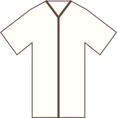
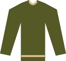

TRIN 01
Start med navy chinos
Vælg et lige snit med plads til at bevæge dig. Bukserne må gerne møde skoen uden at samle sig i store folder.
03 / DIT FØRSTE OUTFIT
En lys skjorte, navy chinos og rene sneakers. Et enkelt smart-casual udgangspunkt, du kan tilpasse til arbejde, dates og hverdag.

LYS SKJORTE / NAVY CHINOS / RENE SNEAKERS
BYG DET TRIN FOR TRIN
Brug de samme principper, også når du vælger andre items.
Vælg et lige snit med plads til at bevæge dig. Bukserne må gerne møde skoen uden at samle sig i store folder.
Hvid eller lyseblå gør kombinationen enkel. Skuldersømmen skal ligge ved skulderen; tuck skjorten for et mere samlet udtryk.
Hold skoene enkle og velholdte. Til en mere formel anledning kan du senere skifte til loafers.

En fin strik i oliven eller navy giver et roligt ekstra lag. Hvis du ikke har brug for det, så lad outfittet være enkelt.
ÉN BASE / TRE ANLEDNINGER
Behold basen, og justér detaljerne efter situationen.
Tuck skjorten, og tilføj fin strik, hvis arbejdspladsen er kølig. Følg arbejdspladsens dresscode.
Hold skjorten enkel, og sørg for rene sko. Et let lag kan gøre udtrykket mere gennemført.
Rul ærmerne let op, eller brug en T-shirt i stedet. Behold de samme bukser og sko.
INDEN DU GÅR UD AD DØREN
Kan du bevæge dig frit? Er tøjet rent? Er farverne rolige? Føles det som dig? Hvis ja, er du klar.
Du behøver ikke ramme perfekt. Læg mærke til, hvad der fungerer, og brug det igen.
Gense grundprincipperneDU HAR ET GODT UDGANGSPUNKT
Dit første outfit er en base, du kan bygge videre på. Vend tilbage til garderoben, når du ved, hvad du mangler.
Tilbage til basisgarderoben